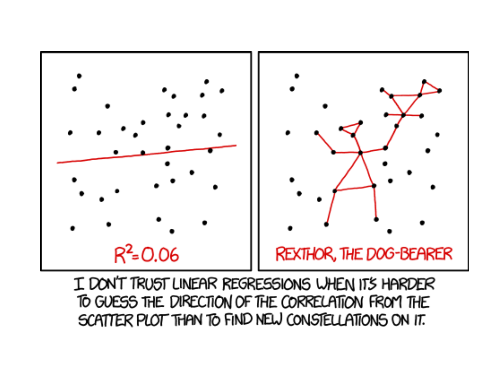
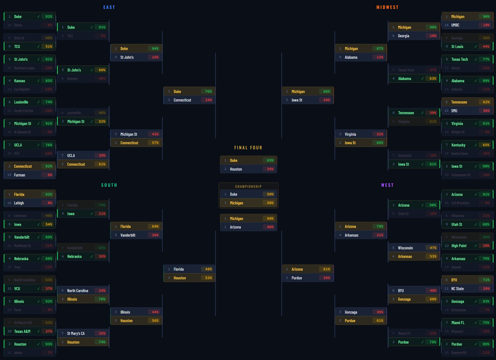
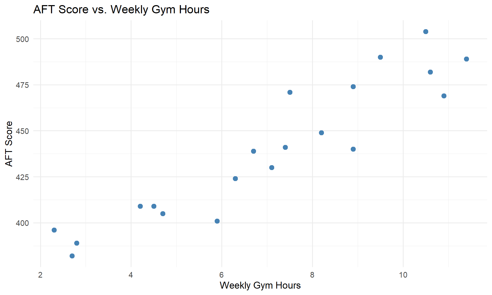
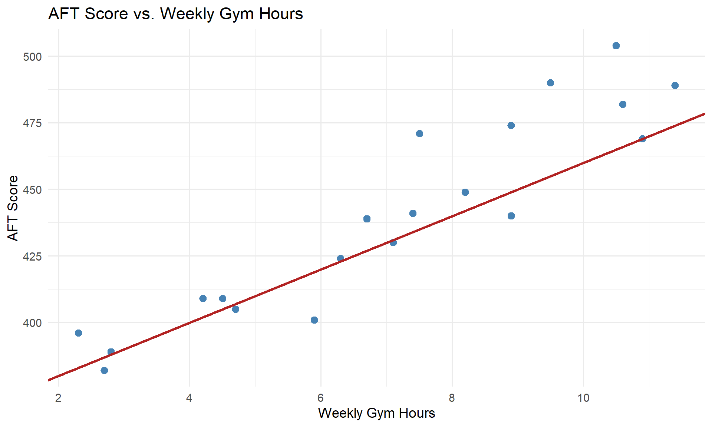
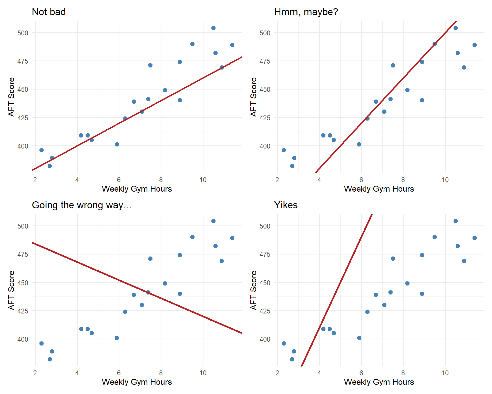
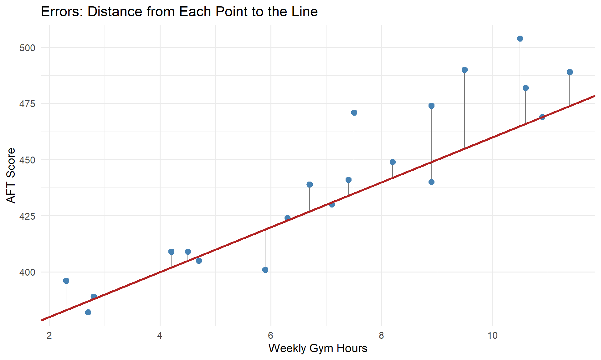
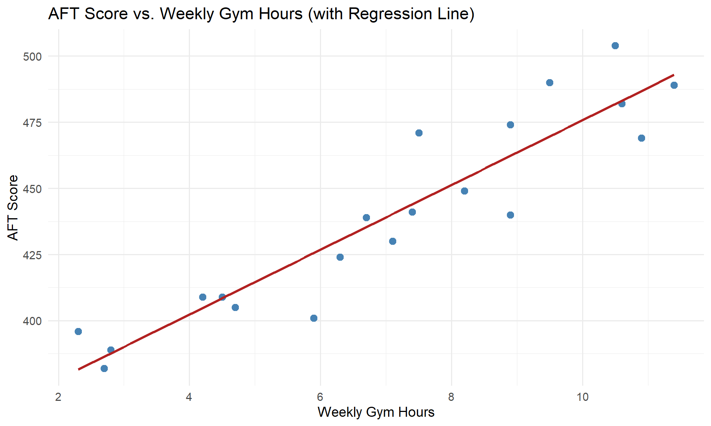

Lesson 28: Simple Linear Regression I

Welcome to Block III: Regression Modeling!
NoteBlock III Overview (Lessons 28–40)
We’ve spent Blocks I and II learning how to describe data and make inferences about populations. Now we shift to modeling relationships between variables.
- Simple Linear Regression (Lessons 28–30): One predictor, one response
- Multiple Linear Regression (Lessons 31–35): Multiple predictors
- Applications & Tech Report (Lessons 36–40): Putting it all together
What We’re Doing: Lesson 28
Objectives
- Describe the relationship between two quantitative variables using a scatterplot
- Fit a least squares regression line: \(\hat{y} = b_0 + b_1 x\)
- Interpret the slope and intercept in context
- Use R to fit a regression model with
lm()
Required Reading
Devore, Sections 12.1, 12.2
Break!

March Madness
The Takeaway for Today
ImportantToday’s Key Ideas
Simple Linear Regression models the relationship between a predictor \(x\) and a response \(y\):
\[\hat{y} = b_0 + b_1 x\]
- Slope \(b_1\): For each 1-unit increase in \(x\), the predicted \(y\) changes by \(b_1\)
- Intercept \(b_0\): When \(x = 0\), the predicted \(y\) is \(b_0\) (if \(x = 0\) is meaningful)
- Least squares chooses \(b_0\) and \(b_1\) to minimize \(\sum (y_i - \hat{y}_i)^2\)
From Inference to Modeling
In Block II, we asked: “Is there an effect?” (hypothesis testing) and “How big is it?” (confidence intervals).
Now we ask: “Can we predict one variable from another?”
Scatterplots: The Starting Point
Before fitting any model, always look at the data.
A scatterplot shows the relationship between two quantitative variables:
- Response (\(y\)): the variable we want to predict — goes on the vertical axis
- Predictor (\(x\)): the variable we use to predict — goes on the horizontal axis
When describing a scatterplot, comment on:
- Direction — positive, negative, or none
- Form — linear, curved, or no pattern
- Strength — how tightly the points follow the pattern
- Unusual observations — outliers, clusters, gaps
Example: Predicting PT Score from Study Hours
A company commander wants to know if time spent in the gym predicts AFT scores. Data from 20 Soldiers:

Direction: Positive — more gym time tends to go with higher scores.
Form: Roughly linear.
Strength: Moderate — points follow the trend but with scatter.
How Can We Model This?
It looks like there’s a relationship here. How could we summarize it?
We could try drawing a line through the data:

This line isn’t terrible — it captures the general upward trend.
But how do we know if this line is any good? Is there a better line we could draw?
Which Line Is “Best”?
We could draw any line through this data. Some are reasonable, some are… not.

We need a principled way to find the best line. But how?
How Can We Get the “Best” Line?
Let’s go back to that first reasonable line. For each point, we can measure the error — how far the point is from the line:

Each gray line is an error (or residual): \(e_i = y_i - \hat{y}_i\).
Minimizing the Error
The best line should make these errors as small as possible. Let’s build up the formula.
Recall our model predicts:
\[\hat{y}_i = b_0 + b_1 x_i\]
The error (residual) is how far off our prediction is:
\[e_i = y_i - \hat{y}_i\]
We can’t just add up the errors — positive and negative errors would cancel out. So we square each one:
\[e_i^2 = (y_i - \hat{y}_i)^2\]
Now add up the squared errors across all \(n\) data points:
\[\text{Total Squared Error} = \sum_{i=1}^{n} (y_i - \hat{y}_i)^2\]
Since \(\hat{y}_i = b_0 + b_1 x_i\):
\[\text{Total Squared Error} = \sum_{i=1}^{n} (y_i - b_0 - b_1 x_i)^2\]
The least squares line chooses \(b_0\) and \(b_1\) to minimize this total squared error.
Deriving the Least Squares Estimates
We want to minimize \(f(b_0, b_1) = \sum_{i=1}^{n} (y_i - b_0 - b_1 x_i)^2\).
Take partial derivatives and set them equal to zero:
With respect to \(b_0\):
Take the derivative using the chain rule — the derivative of \((y_i - b_0 - b_1 x_i)^2\) with respect to \(b_0\) brings down a \(2\) and the inner derivative is \(-1\):
\[\frac{\partial}{\partial b_0} \sum (y_i - b_0 - b_1 x_i)^2 = -2 \sum (y_i - b_0 - b_1 x_i) = 0\]
Divide both sides by \(-2\) and distribute the sum:
\[\sum y_i - \sum b_0 - b_1 \sum x_i = 0\]
Since \(\sum b_0 = n b_0\), and \(\sum y_i = n\bar{y}\), and \(\sum x_i = n\bar{x}\):
\[n\bar{y} - n b_0 - b_1 n\bar{x} = 0\]
Divide everything by \(n\):
\[\bar{y} - b_0 - b_1 \bar{x} = 0\]
Solve for \(b_0\):
\[b_0 = \bar{y} - b_1 \bar{x}\]
With respect to \(b_1\):
Again using the chain rule — the derivative of \((y_i - b_0 - b_1 x_i)^2\) with respect to \(b_1\) brings down a \(2\) and the inner derivative is \(-x_i\):
\[\frac{\partial}{\partial b_1} \sum (y_i - b_0 - b_1 x_i)^2 = -2 \sum x_i(y_i - b_0 - b_1 x_i) = 0\]
Divide both sides by \(-2\):
\[\sum x_i(y_i - b_0 - b_1 x_i) = 0\]
Distribute \(x_i\) and split the sum:
\[\sum x_i y_i - b_0 \sum x_i - b_1 \sum x_i^2 = 0\]
Since \(\sum x_i = n\bar{x}\) and \(b_0 = \bar{y} - b_1 \bar{x}\), substitute:
\[\sum x_i y_i - (\bar{y} - b_1 \bar{x}) n\bar{x} - b_1 \sum x_i^2 = 0\]
Distribute:
\[\sum x_i y_i - n\bar{x}\bar{y} + b_1 n\bar{x}^2 - b_1 \sum x_i^2 = 0\]
Factor out \(b_1\) and rearrange:
\[\sum x_i y_i - n\bar{x}\bar{y} = b_1 \left(\sum x_i^2 - n\bar{x}^2\right)\]
Solve for \(b_1\):
\[b_1 = \frac{\sum x_i y_i - n\bar{x}\bar{y}}{\sum x_i^2 - n\bar{x}^2}\]
We can rewrite these in a cleaner “centered” form. For the denominator, expand \(\sum (x_i - \bar{x})^2\):
\[\sum (x_i - \bar{x})^2 = \sum \left(x_i^2 - 2x_i\bar{x} + \bar{x}^2\right) = \sum x_i^2 - 2\bar{x}\sum x_i + n\bar{x}^2\]
Since \(\sum x_i = n\bar{x}\):
\[= \sum x_i^2 - 2\bar{x}(n\bar{x}) + n\bar{x}^2 = \sum x_i^2 - 2n\bar{x}^2 + n\bar{x}^2 = \sum x_i^2 - n\bar{x}^2 \quad \checkmark\]
For the numerator, expand \(\sum (x_i - \bar{x})(y_i - \bar{y})\):
\[\sum (x_i - \bar{x})(y_i - \bar{y}) = \sum \left(x_i y_i - x_i\bar{y} - \bar{x}y_i + \bar{x}\bar{y}\right)\]
\[= \sum x_i y_i - \bar{y}\sum x_i - \bar{x}\sum y_i + n\bar{x}\bar{y}\]
Since \(\sum x_i = n\bar{x}\) and \(\sum y_i = n\bar{y}\):
\[= \sum x_i y_i - n\bar{x}\bar{y} - n\bar{x}\bar{y} + n\bar{x}\bar{y} = \sum x_i y_i - n\bar{x}\bar{y} \quad \checkmark\]
So we can write \(b_1\) in its cleaner form:
\[b_1 = \frac{\sum (x_i - \bar{x})(y_i - \bar{y})}{\sum (x_i - \bar{x})^2}\]
NoteLeast Squares Formulas
\[b_1 = \frac{\sum (x_i - \bar{x})(y_i - \bar{y})}{\sum (x_i - \bar{x})^2}\]
\[b_0 = \bar{y} - b_1 \bar{x}\]
You won’t need to compute these by hand — R does the work. But you must be able to interpret the output.
Fitting a Regression in R
model <- lm(aft_score ~ gym_hours, data = soldiers)
summary(model)
Call:
lm(formula = aft_score ~ gym_hours, data = soldiers)
Residuals:
Min 1Q Median 3Q Max
-24.584 -6.049 -2.001 6.088 25.846
Coefficients:
Estimate Std. Error t value Pr(>|t|)
(Intercept) 353.418 8.644 40.88 < 2e-16 ***
gym_hours 12.231 1.141 10.72 3.02e-09 ***
---
Signif. codes: 0 '***' 0.001 '**' 0.01 '*' 0.05 '.' 0.1 ' ' 1
Residual standard error: 14.18 on 18 degrees of freedom
Multiple R-squared: 0.8646, Adjusted R-squared: 0.8571
F-statistic: 115 on 1 and 18 DF, p-value: 3.02e-09Interpreting the Output
The fitted equation is:
\[\widehat{\text{AFT Score}} = 353.42 + 12.23 \cdot \text{Gym Hours}\]
ImportantInterpreting Slope and Intercept
Slope (\(b_1 = 12.23\)): For each additional hour per week spent in the gym, a Soldier’s predicted AFT score increases by 12.23 points, on average.
Intercept (\(b_0 = 353.42\)): A Soldier who spends zero hours per week in the gym has a predicted AFT score of 353.42 points.
But do \(b_0\) and \(b_1\) have statistical significance? Notice there’s a p-value at the end of each row. Where there’s a p-value, there’s a hypothesis test. Let’s see what these tests are telling us.
NoteHypothesis Tests in the Output
R is running a hypothesis test on each coefficient:
For the slope: Is there a significant linear relationship between \(x\) and \(y\)?
\[H_0: \beta_1 = 0\] \[\quad H_a: \beta_1 \neq 0\]
For the intercept: Is the intercept significantly different from zero?
\[H_0: \beta_0 = 0\] \[\quad H_a: \beta_0 \neq 0\]
The slope test is usually the one we care about most — if we fail to reject \(H_0: \beta_1 = 0\), that means \(x\) is not a useful predictor of \(y\).
WarningContext Matters!
- The slope interpretation must include units and context — “the slope is 12.23” is not enough
- If \(x = 0\) is outside the range of the data, the intercept may not have a meaningful interpretation — say so!
Visualizing the Fit

Making Predictions
Once we have the equation, we can predict \(y\) for a given \(x\):
Example: Predict the AFT score for a Soldier who spends 8 hours per week in the gym.
Plug \(x = 8\) into our equation:
\[\widehat{\text{AFT Score}} = 353.42 + 12.23(8) = 353.42 + 97.8 = 451.3\]
We can also do this in R:
predict(model, newdata = data.frame(gym_hours = 8)) 1
451.2699
WarningInterpolation vs. Extrapolation
- Interpolation: Predicting within the range of the observed data — this is fine
- Extrapolation: Predicting outside the observed range — dangerous! The linear trend may not continue
Our gym hours ranged from 2.3 to 11.4. Predicting for 8 hours is interpolation. Predicting for 25 hours would be extrapolation.
Let’s Go to Vantage!
Before You Leave
Today
- Scatterplots describe the direction, form, strength, and unusual features of a relationship
- Least squares regression fits \(\hat{y} = b_0 + b_1 x\) by minimizing squared residuals
- Slope = predicted change in \(y\) for a 1-unit increase in \(x\) (always interpret in context!)
- Intercept = predicted \(y\) when \(x = 0\) (may not be meaningful)
- Residuals = \(y_i - \hat{y}_i\) = observed minus predicted
- Extrapolation is dangerous — don’t predict outside the data range
Any questions?
Next Lesson
Lesson 30: Simple Linear Regression II
- \(R^2\): How much variability does the model explain?
- Residual plots: Checking whether the linear model is appropriate
- Note: Lesson 29 is a course drop (Plebe Parent Weekend)
Upcoming Graded Events
- Tech Report — Due Lesson 36